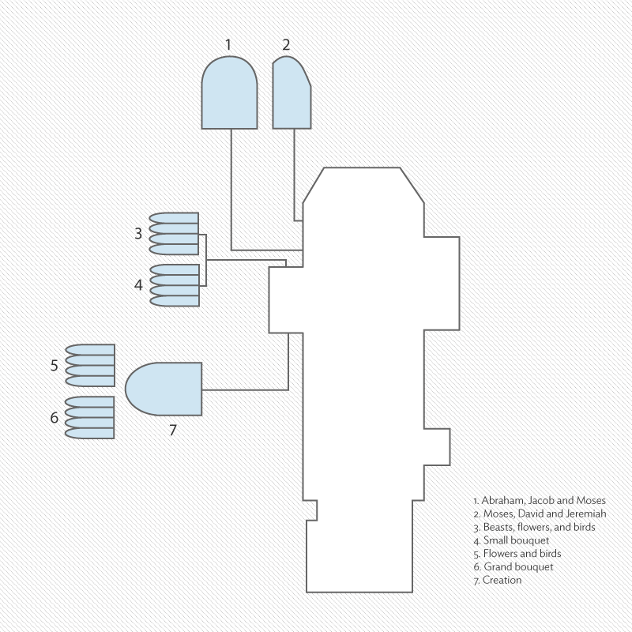
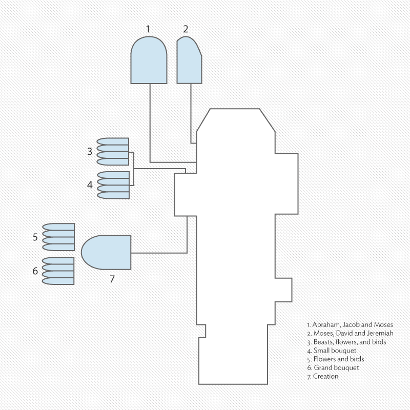

CHAGALL and Stained Glass
The Cathedral of Saint-Étienne, Metz, damaged during World War II, began major restoration in 1957, with Chagall and Marq producing seven windows for the ambulatory of the north transept and apse, and the triforium. The 14th-century Gothic cathedral presented a new iconographic and compositional challenge: to create a unified design appropriate to the liturgical function, the scale, and the medieval order of the building. Chagall chose to render birds and florals in soft, pale tones for the triforium in order to illuminate the communal space below, while for the intimate spaces of the north transept and apse, he depicted Old Testament themes in deep, bold colors. For the 4 lancets (thin, pointed arch segments) of the window on the west side of the north transept, entitled The Creation, Chagall depended on the joyous quality of yellow glass to illustrate each part of the story.


 
